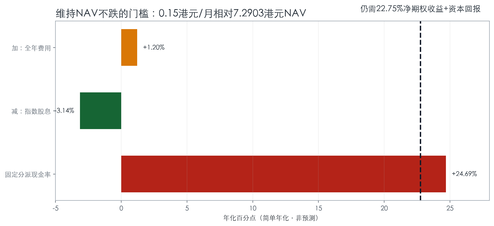
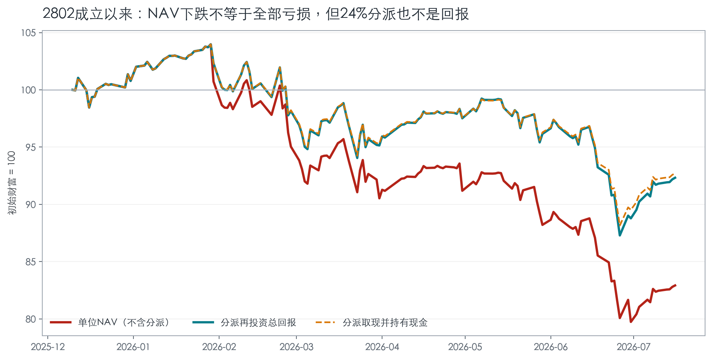
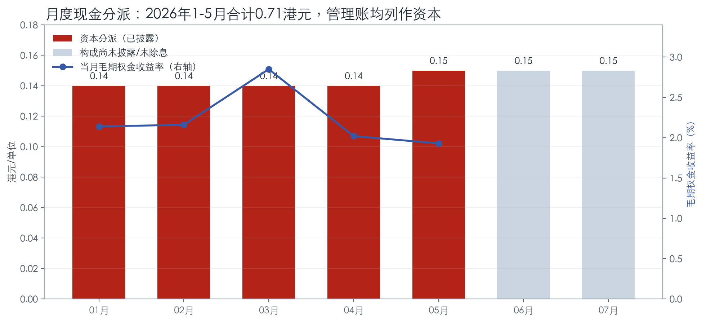
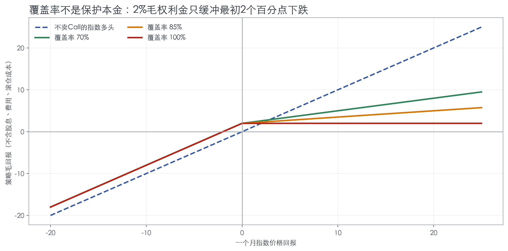
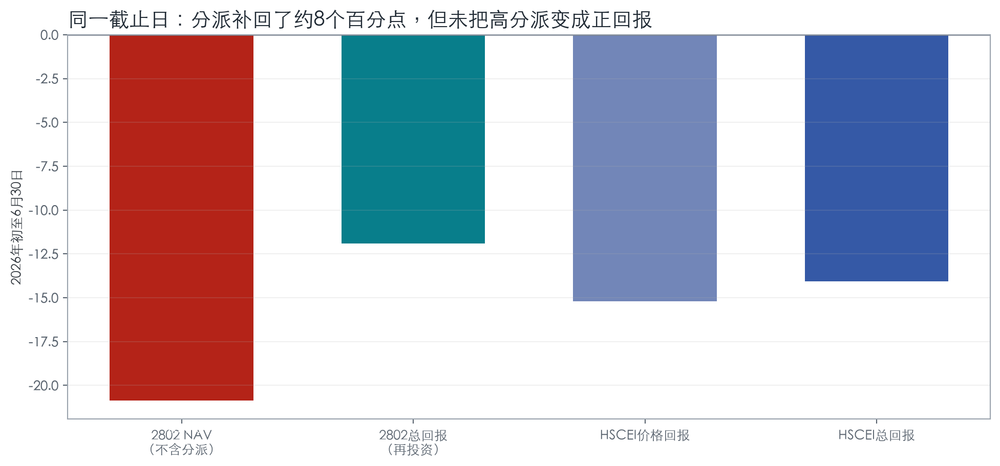
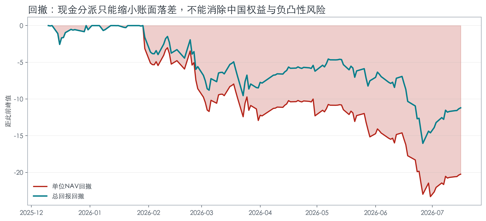
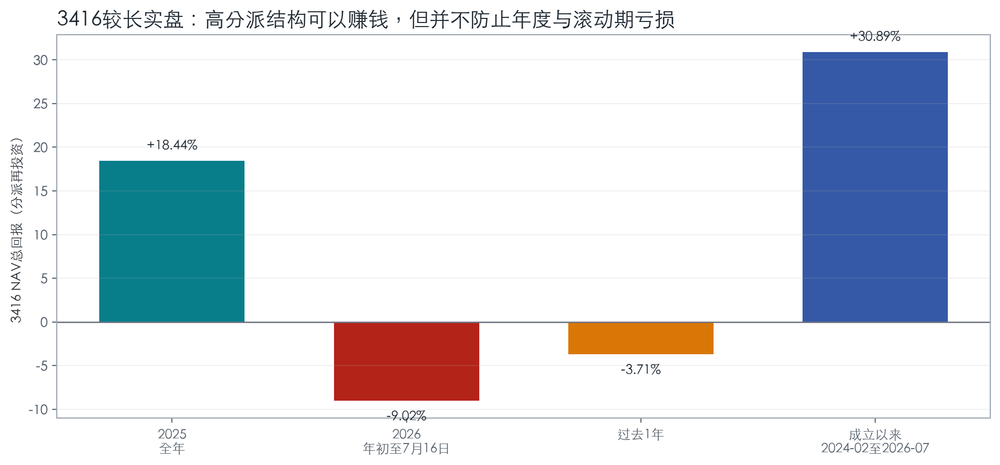
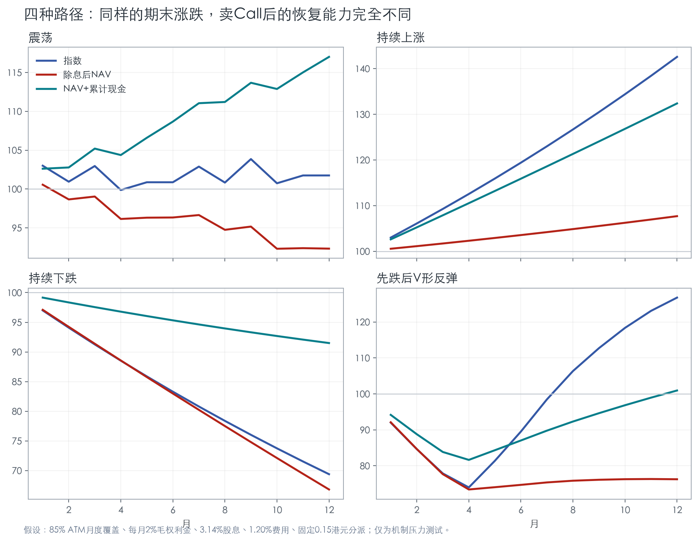
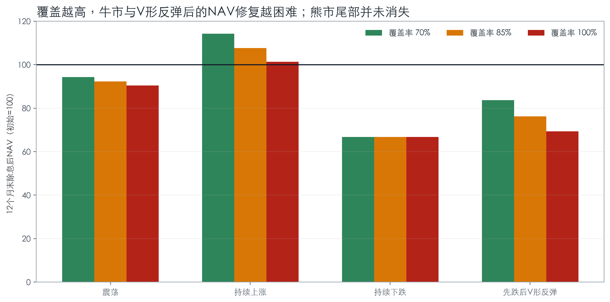
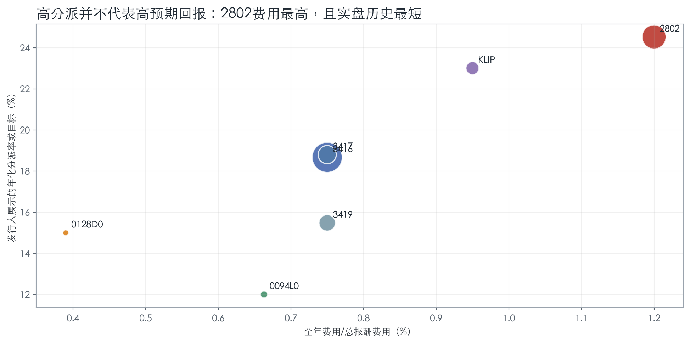

高分派是否可持续、NAV是否会长期衰减、当前深度价内Call仓位是否值得买
| 投资用途 | 结论 | 理由 |
|---|---|---|
| 长期中国权益核心仓位 | 不适合 | 长期上涨参与被Call截断；费用高；策略历史太短；路径依赖明显。 |
| 本金稳定的“收息”仓位 | 不适合 | 分派可来自资本；除息等额压低NAV；下跌尾部仍接近中国权益多头。 |
| 中国复苏/大牛市多头 | 不适合 | 高覆盖会放弃大部分突破行权价后的上涨；当前Call已深度价内。 |
| 震荡市战术卫星仓位 | 有条件适合 | 隐含波动率高、随后实现波动率低、指数横盘或温和上涨且不持续越过行权价时最有利。 |
截至2026年7月16日，不建议为了7月分派在除息前追买。基金卖出2026年7月30日到期、行权价7700点的HSCEI Call；当日指数8318.14点，行权价低约7.4%。覆盖部分在滚仓前的新增上涨参与接近零。除息不会产生免费收益。
如果一定要配置同类策略，优先比较3416：同一HSCEI、同样70%-100%覆盖，但费用0.75%、历史更长、规模更大、三币柜台。2802需要用更好的实际滚仓、流动性或税务/交易体验来弥补每年约45bp的费用劣势，目前证据不足。
不会“机械地必跌”，但在分派目标接近24%-25%、高覆盖Call和1.20%费用同时存在时，NAV长期侵蚀是基准风险，不是尾部例外。只有策略的真实经济收益覆盖分派后，除息形成的缺口才会修复。

| 法律与监管 | 香港单位信托项下子基金；SFC主动ETF授权（CE编号BWZ967）；2025-12-11上市；不追踪指数。 |
|---|---|
| 投资框架 | 50%-100% NAV直接持有HSCEI成分股；HSCEI期货名义金额最高50%；HSCEI ETF最高30%；卖出Call覆盖总多头敞口70%-100%。 |
| 期权参数 | 上市或OTC、欧式现金结算；主要使用前月ATM，亦可OTM、远月、周度OTM或提前滚仓；写出时行权价一般在指数上下30%内，期限不超过一年。 |
| 费用 | 管理费0.99%；估计全年经常性开支1.20%（首个12个月上限2%，实际可与估计不同）。未上市A类管理费1.50%、全年开支1.60%。 |
| 交易 | 港元交易；每手100单位；一级申赎最低500,000单位，按7.2903港元NAV约需364.5万港元。 |
| 服务机构 | 管理人南方东英资产管理；受托人、登记处及托管人均为HSBC相关实体。参与证券商、做市商通过一级申赎与二级报价连接NAV和市价。 |
这套设计把一个复杂的短波动策略包装成容易理解的月度现金流，能显著扩大对“收息”投资者的募集吸引力，也让分派数字在销售材料中成为第一信号。但分派率是管理人决定的现金流政策，不是组合自动产生的收益率。固定金额分派在NAV下跌后，会机械地抬高“年化分派率”。
按2026-07-16约91.57亿港元AUM，0.99%管理费对应管理人年化收入约9,065万港元；1.20%全年开支对应投资者约1.099亿港元年度拖累。规模扩大提高发行人经济利益，但不会自动改善每单位策略回报。
关键并非“会不会卖Call”，而是覆盖率、行权价、期限、滚仓时点与工具选择。70%和100%覆盖在牛市中的结果可以相差巨大；ATM比OTM收入高，但更快牺牲上涨；提前滚仓可以释放Delta，也可能在高价买回期权、锁定亏损。
招募说明书允许新增申购沿用现有行权价和到期日。这意味着大量新资金在旧Call已价内时进入，可能不是以当时指数为基准重新卖ATM，而是继承旧仓位的低Delta。这正是“买入时点”比普通被动ETF更重要的原因。
一级申赎和做市通常可压缩折溢价，但不是无条件保证。快速扩张会增加期货、期权、保证金和OTC对手方管理负担。招募说明书提示：交易所持仓限制可能妨碍按目标规模写出期权，甚至限制申购；极端市场保证金可能超过预期的25% NAV。证券借贷预计约20%、上限50%，借款上限10%，又增加抵押品与对手方链条。
投资者每月收到0.15港元时，基金同日少了同等资产；若投资者把现金留在账户，总财富是“剩余NAV + 累计现金”，若再投资则是更多单位乘以较低NAV。两种口径都不会凭空创造财富。


实盘数据正好说明这个区别：2026年1-5月披露的月度毛期权金收益率都接近或高于当月分派收益率，但这段期间NAV仍未稳定上升。原因是毛期权金还要与Call结算损失、国指涨跌、滚仓与费用合并后，才形成组合的真实经济收益。
假设每月收2%毛权利金，若指数上涨10%、覆盖率85%，Call结算损失约8.5%，净期权结果是2%-8.5%=-6.5%；与指数多头合并后，策略只获得约3.5%毛回报。若指数下跌10%，Call到期无价值，权利金把亏损从约-10%缓冲到约-8%，但并未保护本金。

0.15港元×12÷7.2903港元=24.69%简单年化现金率。HSCEI股息率约3.14%，费用约1.20%，因此组合还要从净期权经济收益和资本涨幅取得约22.75%，NAV才有望维持。净期权收益必须扣除Call结算损失、买回与滚仓成本；把24%毛期权金直接与24%分派相抵是错误算法。
截至2026-06-30，发行人公布的NAV-to-NAV、分派再投资总回报为：1个月-7.67%、3个月-6.69%、6个月/YTD -11.91%、成立以来-11.22%。同日HSCEI事实表显示YTD价格回报-15.21%、总回报-14.08%。短样本里2802在跌市略有缓冲，但总回报仍明显为负。


3416自2024年2月上市，采用同一HSCEI、相同70%-100%覆盖框架。按发行人截至2026-07-16的同一页面口径，2025全年总回报+18.44%，2026年初至7月16日-9.02%，过去一年-3.71%，成立以来+30.89%。这同时否定两种极端说法：它不是“必然一直跌”，也不是“高分派天然防跌”。

更重要的实证结论不是某一段绝对回报，而是结构性：2025的正回报说明震荡/上行环境可以创造财富；2026的负回报说明权利金无法消除下跌；过去一年为负而成立以来为正，说明入场时点与滚仓路径非常重要。3416几乎所有月度分派也被列为资本，进一步证明“资本分派”是此类期权会计的常态，但不证明本金稳定。
| 快照 | 2026-07-16 |
|---|---|
| HSCEI | 8318.14点 |
| 卖出Call | HSCEI 2026-07-30 C7700 |
| 价内程度 | 行权价较现货低约7.4%；发行人显示“到行权价前潜在上涨”0% |
| 经济含义 | 覆盖部分到期前净Delta接近零；指数继续上涨，长仓增值大部分由短Call负债增加抵消；指数回落但仍高于7700时，短Call负债下降会提供一定抵消。 |
| 关键未知 | 精确覆盖率、名义金额、Delta及NAV占比未充分披露，无法量化全基金即时上涨捕获率。 |
期末涨跌不足以描述卖Call。两条都以指数+20%结束的路径，一条平滑上涨、一条先跌后V形反弹，策略结果可能截然不同，因为每次滚仓都会重新设定上限。

| 85%覆盖，12个月末 | 指数 | 除息后NAV | NAV+累计现金 |
|---|---|---|---|
| 震荡 | 101.7 | 92.3 | 117.0 |
| 持续上涨 | 142.6 | 107.7 | 132.4 |
| 持续下跌 | 69.4 | 66.8 | 91.5 |
| 先跌后V形反弹 | 126.8 | 76.3 | 100.9 |

| 环境 | 期权结果 | NAV倾向 | 2802适配 |
|---|---|---|---|
| 高隐含波动、低实现波动、横盘 | 权利金高、赔付低 | 最有机会覆盖分派 | 最佳 |
| 温和上涨、不持续越过行权价 | 部分权利金保留 | 可稳定或缓升 | 尚可 |
| 持续大牛市 | Call赔付高、上涨被截断 | 相对指数显著落后 | 差 |
| 持续下跌 | 权利金缓冲有限 | 与指数一同下跌并继续除息 | 差 |
| 先跌后V形反弹 | 低位新Call再次截断反弹 | 最难修复 | 最差之一 |

| 产品 | 费用/规模 | 策略与分派 | 相对2802的意义 |
|---|---|---|---|
| 3416 Global X HSCEI Covered Call | 0.75%；2026-07-16约224.52亿港元 | 同一HSCEI、70%-100%覆盖、月派；港元/美元/人民币柜台 | 首要替代。费用低45bp、历史更长、规模更大、披露期权名义金额更清楚。 |
| 3417 / 3419 | 均0.75%；约29.30/20.04亿港元 | 分别覆盖HSTECH/HSI | 不是同Beta；用来选择科技高波动或更广HSI敞口。 |
| KLIP | 0.95%；约1.006亿美元 | KWEB全覆盖倾向；分派率23.01%，SEC yield 8.51% | 中国互联网集中度更高；高分派与ROC并存，不能作为本金稳定证据。 |
| 0094L0 / 0128D0 | 韩国；目标权利金12%/15% | 动态、小比例周度覆盖；0094L0平均卖出约15%，争取约85%上涨参与 | 展示另一条设计路径：降低“派息目标”，换取更高上涨参与。 |
| 2828 | 0.66% ongoing；约229.91亿港元 | 被动HSCEI，半年派 | 看多中国复苏更直接。没有Call上限，费用更低。 |
| 3110 | 0.68%；2026-05约7.89亿美元 | 恒生高股息股票，不卖Call，半年派 | 需要股息型权益现金流、又不愿系统性卖上涨权时更直接。 |
| 货币市场/短债ETF | 视产品而定 | 利息收入、低权益Beta | 若目标是真正本金稳定和可预测收入，风险来源更匹配；收益率不会接近24%。 |
1.20%-0.75%=45bp。以2802 91.57亿港元AUM计算，每年约4,120万港元额外拖累。若持有三年且规模与费率不变，未计复利约1.35个百分点。除非2802主动执行带来的净增值持续超过这45bp，否则同策略选择3416更合理。
3416也不是没有同类路径风险：其2026-07-16披露的期权名义金额合计约为NAV的105.5%，多数同样是7月30日C7700，显示潜在上涨0%。相较之下，它的优势是把名义金额和NAV占比公开得更清楚，而不是策略本身更安全。
投资者可以持有2828，并按月卖出约2%的单位作为现金流。这样同样会减少持有单位，但不会把上涨权永久卖给期权买方。2802的潜在额外价值只有两项：波动率风险溢价和专业化执行；代价是1.20%费用、上行截断、滚仓路径依赖和透明度不足。若未来实盘不能在风险调整后持续优于“2828 + 自定提款”，高分派包装本身没有价值。
| 监控项 | 为什么重要 | 红旗 |
|---|---|---|
| 分派再投资总回报 | 唯一可与指数、公平替代比较的回报 | 12个月持续落后HSCEI且下行保护有限 |
| NAV与每单位分派 | 固定金额在NAV下降时抬高表面分派率 | NAV新低而仍机械维持0.15 |
| Call行权价/到期日/覆盖率 | 决定即时Delta和上涨捕获 | 持续深度价内、覆盖接近100%、披露不完整 |
| 毛权利金与Call结算损失 | 二者净额才是期权经济收益 | 只宣传权利金，不披露赔付/滚仓损益 |
| 折溢价与买卖价差 | 影响二级市场实际回报 | 限制申购、做市减少、持续溢价 |
| 规模、保证金、OTC与证券借贷 | 快速扩张增加容量和对手方管理难度 | 保证金异常上升、期权覆盖偏离目标、申购暂停 |
| 3416相对表现 | 最接近、费用更低的执行基准 | 2802没有稳定45bp以上净执行优势 |
| 投资者画像 | 2802 | 首选动作 | 更匹配的替代 |
|---|---|---|---|
| 长期总回报、看好中国1-3年复苏 | 不适合 | 避免用高分派替代上涨敞口 | 2828或其他低费国指ETF |
| 需要本金稳定、现金流可预测 | 不适合 | 不要把资本分派当利息 | 货币市场或短久期债券ETF |
| 需要股票股息，但希望保留上涨 | 不优 | 用真实股息率和盈利质量筛选 | 3110等高股息ETF |
| 判断未来3-6个月震荡、高IV低RV | 可小仓位 | 等滚仓后确认行权价/覆盖率；设总回报止损 | 3416，或自建低覆盖Call |
| 预期大牛市或V形反弹 | 回避 | 不要在深度价内Call阶段追买 | 普通指数ETF |
| 能自己交易期权、愿意主动管理 | 价值有限 | 比较自建策略的佣金、保证金与税务 | 2828 + 低比例/OTM Call |